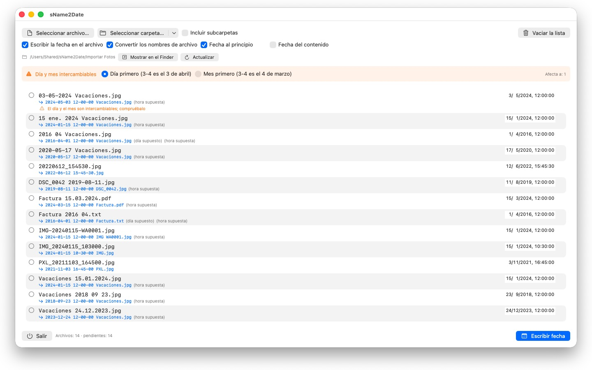
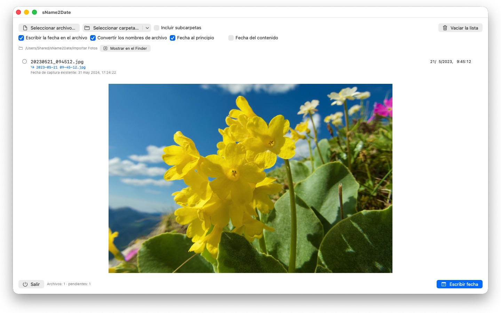

Las fotos sin fecha de captura no se ordenan en ningún sitio. sName2Date toma la fecha del nombre del archivo y la escribe donde la busca cualquier gestor de fotos.


Muchas fotos y vídeos llevan su fecha en el nombre del archivo, pero no donde los programas la buscan. Quien recibe imágenes de un chat, de un escáner o de un archivo antiguo obtiene archivos como IMG_20240115_103000.jpg o Vacaciones 15.01.2024.jpg, que aparecen en cualquier gestor de fotos con la fecha de hoy.
sName2Date lee la fecha del nombre del archivo y la escribe como fecha de captura dentro del archivo. Si todavía no hay ninguna, se crea.
FORMATOS RECONOCIDOS
Fecha y hora en las formas habituales, entre otras:
- 2024-01-15 10-30-00
- IMG_20240115_103000
- IMG-20240115-WA0001
- 2024-01-15 · 2024 01 15 · 2024_01_15
- 15.01.2024 · 15-01-2024 · 15.01.24
- 15 ene. 2024 · 15 marzo 2024 · January 15 2024
- 2016 04 · 04-2016 — solo año y mes
Los nombres de mes escritos con letra se leen en el idioma de tu sistema y en inglés, tanto en la forma larga como en la abreviada.
Si el nombre solo lleva una fecha, se supone una hora; cuál, lo decides tú. Si falta también el día, vale el primero del mes, y la línea lo indica. Si el nombre contiene varias fechas, gana la primera. Y donde el día y el mes podrían intercambiarse, decide tu ajuste: los archivos afectados se señalan expresamente, en lugar de adivinar en silencio.
Si en el nombre no hay ninguna fecha, la introduces tú mismo a la derecha de la línea. Eso llega hasta 1826, el año de la fotografía conservada más antigua: las tomas escaneadas del siglo XIX se pueden fechar igual que las de ayer.
QUÉ SE MODIFICA
Se escriben EXIF DateTimeOriginal y DateTimeDigitized, además de TIFF DateTime; en los vídeos y las grabaciones de audio, la fecha de creación dentro del contenedor. Si lo deseas, también la fecha de creación y de modificación del archivo.
Los datos de imagen quedan intactos: un JPEG no se vuelve a comprimir y un vídeo no se vuelve a codificar. En los vídeos y las grabaciones de audio, la app suele cambiar solo unos pocos bytes del contenedor en lugar de reescribirlo; así, incluso un vídeo grande queda listo en un instante.
Admiten una fecha de captura JPEG, PNG, TIFF, HEIC y GIF, además de los formatos de vídeo MP4, MOV y M4V y los formatos de audio M4A y M4B.
TAMBIÉN LOS ARCHIVOS QUE NO PUEDEN LLEVAR UNA FECHA DE CAPTURA
Un PDF, un archivo de texto, una hoja de cálculo no tiene ningún campo para una fecha de captura y, aun así, entra en la lista. Ahí sName2Date ajusta la fecha de creación y de modificación del archivo, el único sitio al que el dato puede llegar; la fila lo muestra con una marca naranja en vez de una verde. Aquí no cuenta ninguna extensión: PDF, texto, hojas de cálculo, archivos comprimidos, todo.
Si no quieres que se toque el archivo, desactivas en la parte superior de la ventana la casilla «Escribir la fecha en el archivo». Entonces sName2Date se limita a poner el nombre en la escritura ISO: Factura 15.03.2024.pdf se convierte en 2024-03-15 12-00-00 Factura.pdf, y en el Finder la carpeta se ordena así por fecha. Si lo prefieres, la fecha se queda donde estaba dentro del nombre en lugar de pasar al principio.
TODO SE PUEDE DESHACER
Una pasada se deshace por completo con Cmd+Z: la fecha de captura, las marcas de tiempo del archivo y el nombre modificado. Cmd+Shift+Z la vuelve a aplicar.
CARPETAS ENTERAS
sName2Date acepta árboles de carpetas enteros de una vez y puede omitir los archivos que ya tienen una fecha de captura. Las carpetas autorizadas una vez las recuerda y no vuelve a preguntar por ellas.
sName2Date Lite · Gratis — La edición para un archivo por pasada: escribir la fecha del nombre de archivo como fecha de captura en una foto, un vídeo o una grabación de audio, ajustarla a mano, pasar el nombre a la notación ISO y deshacerlo todo con ⌘Z; las mismas capacidades que sName2Date, solo que sin carpetas enteras.
- Requiere macOS 12 o posterior
- 24 idiomas
- Soporte: SwiftAppsBavaria@gmx.net
Más apps
sCollect
Organizar música, películas, audiolibros, libros electrónicos y otras colecciones en una biblioteca multimedia.
sVectorLift
Abrir, ver y guardar clipart vectorial antiguo como SVG: CorelDRAW, Windows Metafile y CGM.
SwiftRename
De la tarjeta de memoria al archivo: nombrar fotos y vídeos según la hora de captura, ordenarlos por año y mes y detectar duplicados, también en RAW.
sCollectPlay
El reproductor para la biblioteca multimedia: reproducir música, películas, audiolibros y pódcasts simplemente desde una carpeta, un XML de iTunes o una biblioteca de sCollect, sin cambiar nada en las etiquetas de los archivos. Con listas de reproducción, pistas de audio y de subtítulos y, en las películas, cámara lenta y avance fotograma a fotograma. Lo que macOS no reproduce por sí mismo, como MKV, AVI o DSD, se pasa a un reproductor externo.
sCollectPlay Lite
La edición ligera de sCollectPlay: simplemente abrir una carpeta, un XML de iTunes o una biblioteca de sCollect y reproducir desde ahí música, películas, audiolibros y pódcasts, con listas de reproducción, pistas de audio y de subtítulos, cámara lenta y avance fotograma a fotograma. Una fuente por sesión; el navegador de columnas, las listas de reproducción propias y las fuentes usadas recientemente quedan reservados a la versión completa.
sBikeBridge
Analizar salidas en bicicleta sin subirlas a un portal: importar archivos FIT de cualquier ciclocomputador que grabe en este formato, además de GPX y TCX. Las salidas se guardan en una biblioteca propia en el Mac, con mapa, potencia y frecuencia cardiaca, fotos y notas; la importación detecta los duplicados. Las estadísticas por año o por mes y los filtros por distancia, desnivel y duración permiten comparar las salidas. Si se desea, el mapa también está disponible sin conexión.